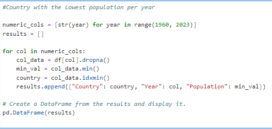

by Garikayi Tarambiwa

This data was obtained from the World Bank DataBank and can be accessed here. The dataset consists of 266 entries (rows) and 67 columns. The columns represent years from 1960 to 2022, along with 'Country Name', 'Country Code', 'Indicator Name', and 'Indicator Code'. The data type for most of the columns is float64, which signifies the population count. The columns 'Country Name', 'Country Code', 'Indicator Name', and 'Indicator Code' are of type object.

Fig 1. Sample of Dataset.
I loaded the data directly from an Excel file into a pandas dataframe and set 'Country Name' as the index to simplify data manipulation. Upon checking for null values, I found two rows with missing data: 'Not classified' and 'West Bank and Gaza'. I dropped the 'Not classified' row due to its complete lack of data, while I kept 'West Bank and Gaza', which had available data from 2013 onwards. Finally, I filtered the dataframe to include only a specific list of countries, ensuring our analysis focused on these selected nations.
The dataframe's descriptive statistics revealed that it has 172 entries for each year from 1960 to 2022 (Indicating there is missing data as there are 197 countries). The median population grew from approximately 2.94 million in 1960 to about 9.13 million in 2022. By 2022, 75% of countries had a population of around 28.34 million, up from approximately 8.33 million in 1960. The maximum population increased from around 667 million in 1960 to about 1.42 billion in 2022

Fig 2. Sample of descriptive statistics.
Nauru held the record for the lowest population from 1960 to 2017, which Tuvalu took over from 2018 to 2022. On the other hand, China held the title for the highest population from 1960 to 2021, with India surpassing it in 2022.
Fig 3. Python Script to find country with the lowest population each year
Next, I plotted the annual population growth rate from 1961 to 2022 for India and China, the two countries with the largest populations. The graph showed a general decline in the population growth rates of both countries over the years, with China's decline being more significant.
Fig 4. Plot of Annual population growth rate from 1961 to 2022 for India and China
This visual representation effectively illustrates the changing population dynamics in these countries over the past six decades. I also calculated the correlation between the population growth of India and China from 1960 to 2022, which came out to be approximately 0.67.
Fig 5. Python Script to find correlation between the population growth of India and China from 1960 to 2022.
This positive correlation suggests that India's population growth rate tends to increase as China's does, and vice versa. However, the correlation isn't very strong (less than 0.7), implying that while there's a general tendency for the growth rates to move together, it's not a strict relationship, indicating the influence of other factors.
The Jupyter Notebook to open the full python script for this project can be found here.